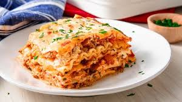
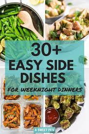
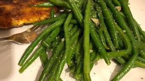
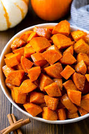
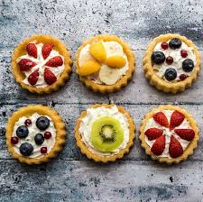

Main Dishes  |
|---|
| A main dish is the primary dish of a meal, around which the meal is built. It is usually meat or fish, or something like a casserole with meat or fish in it, and is usually accompanied by one or more side dishes. A side dish is a food item meant to accompany the main dish. |
 |
| This chicken dish is extremely fast and economical. It makes a nice sauce that works well over brown rice or wide noodles. If you want extra sauce for leftovers, double the recipe. —Irene Boffo, Fountain Hills, Arizona |
 |
| Recipe by:John Chandler" It takes a little work, but it is worth it." |
| Side Dishes  |
|---|
| A side dish, sometimes referred to as a side order, side item, or simply a side, is a food item that accompanies the entrée or main course at a meal. |
 |
| "Only fresh green beans and garlic will do for this easy, healthy, and flavorful side dish." |
 |
| These easy roasted sweet potatoes are tossed in maple cinnamon butter and cooked until caramelized and tender. A simple yet satisfying side dish that’s perfect for a casual dinner, yet elegant enough for a holiday meal! |
| Desserts  |
|---|
| A usually sweet course or dish (as of pastry or ice cream) usually served at the end of a meal. |
| type something ???? |